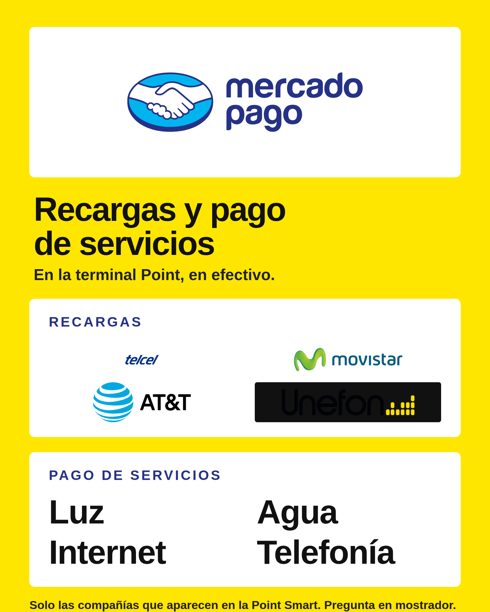
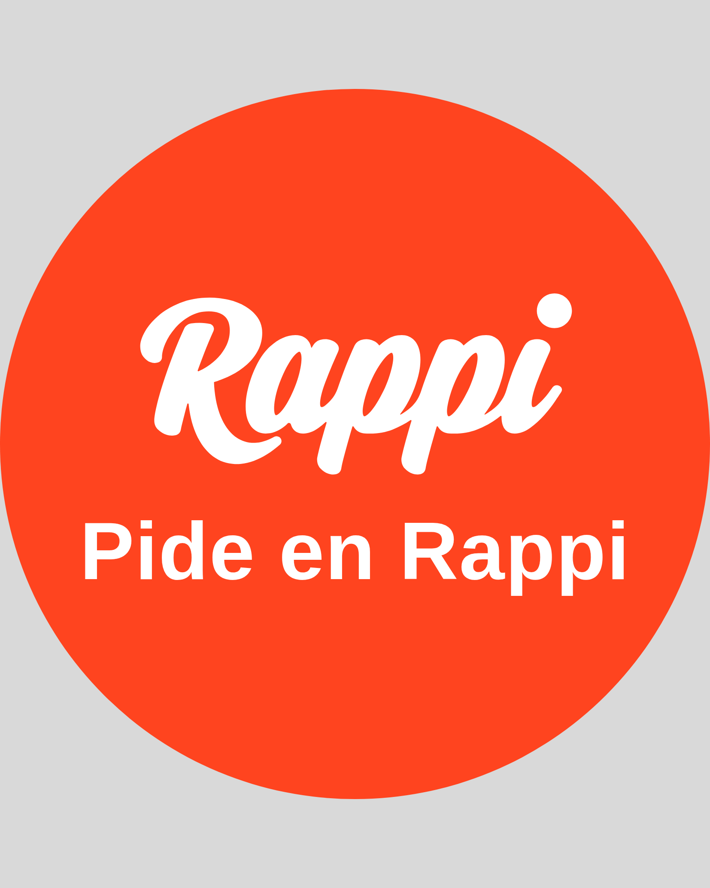
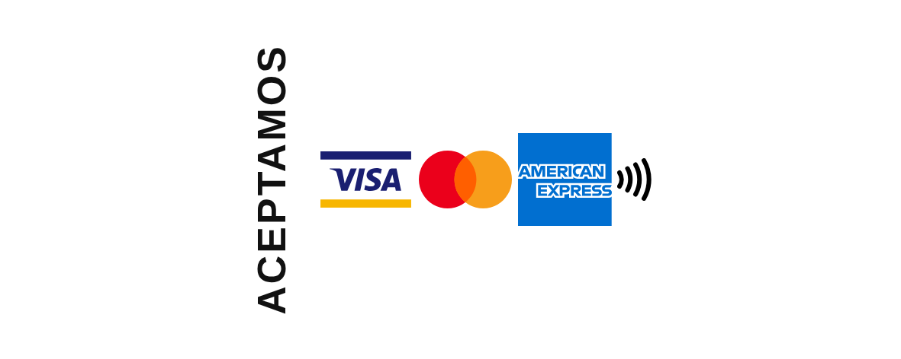
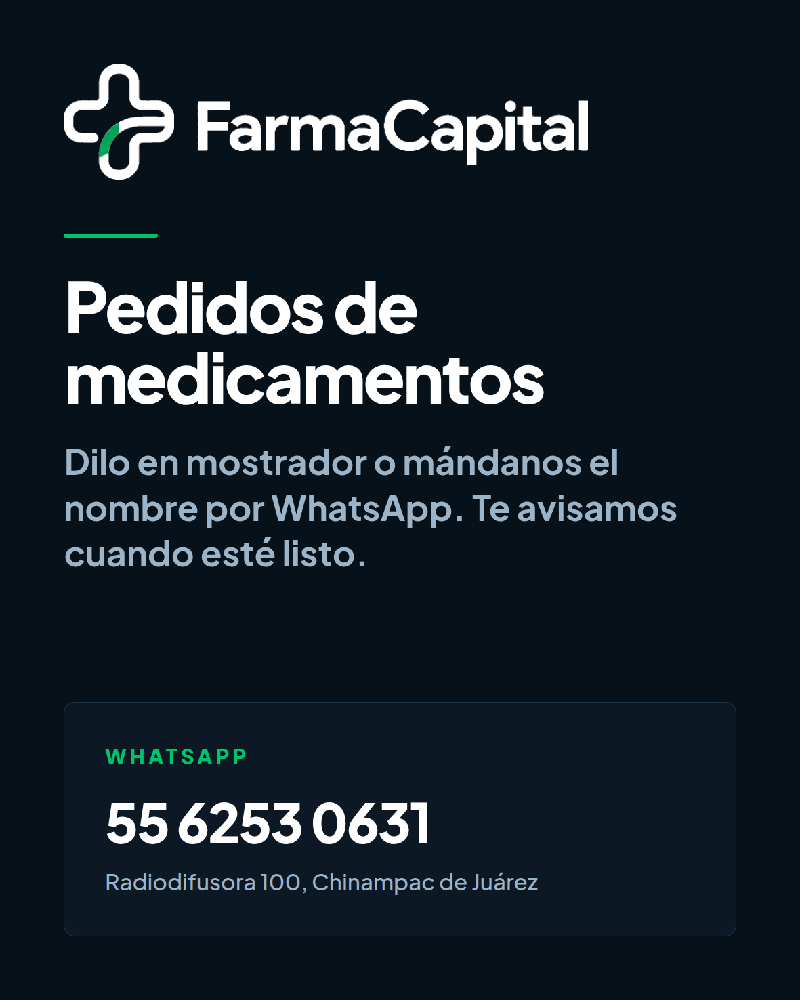

FARMACAPITAL · SEÑALÉTICA DE FACHADA
Propuesta profesional de anuncios de servicio
Radiodifusora 100, Chinampac de Juárez · septiembre 2026. Los lugares de la propuesta anterior se mantienen. Cambia el diseño: cada pieza debe parecer material oficial de esa marca, no un flyer de FarmaCapital.
Qué falló en la propuesta anterior
Los lugares estaban bien. El diseño no. Se veía como un cartel armado en Canva, no como los letreros que ya existen en Oxxo, farmacias de cadena o un comercio con terminal Point.
Por qué se veía mal
- Trató las cuatro piezas como una campaña coordinada. En la calle, los letreros oficiales no combinan entre sí: Rappi es naranja, Mercado Pago es amarillo, las tarjetas van en blanco.
- La creatividad se fue a los logotipos (sombras, recortes, “diseño”). Eso es justo lo que las marcas prohíben.
- Un collage de muchas compañías de recarga que la Point Smart no tiene.
- El de tarjetas no copiaba el adhesivo real de puerta: marcas al mismo tamaño, mucho aire, cero adorno.
- Banderolas circulares tipo clipart, tipografía de plantilla y un sistema visual inventado.
Regla de esta versión
- Logotipos tal cual los entrega la marca: sin redibujar, recolorear, inclinar ni recortar.
- La creatividad va en forma, material y lugar: banderola tipo “salida”, círculo troquelado, vinil por dentro del cristal.
- FarmaCapital solo en pedidos de medicamentos.
- Recargas: solo Telcel, Movistar, AT&T y Unefon (ayuda oficial de Mercado Pago México).
- Servicios: luz, agua, internet y telefonía. Sin logos de CFE o Telmex que no son material de punto de pago.
Cómo lo resuelven otros establecimientos
- Tarjetas: adhesivo blanco chico en la puerta, Visa / Mastercard / Amex al mismo tamaño y el símbolo contactless de EMVCo. Así lo mandan Visa y Amex en su material POP. Un cartel de 20×25 lleno de texto se ve de ferretería, no de comercio.
- Mercado Pago: su kit oficial 2025 es amarillo + logo en color sobre blanco. Ellos mismos venden/regalan stickers de “Servicios y recargas”. No un menú de 20 empresas.
- Rappi: círculo o cuadro naranja #FF441F y el wordmark blanco. Nada más. Eso se lee a 15 metros.
- Farmacia: el único letrero “de casa” es el de pedidos: oscuro, limpio, teléfono grande.
Ubicación (se mantiene)

| Pieza | Lugar | Medida | Material |
|---|---|---|---|
| Mercado Pago · recargas y servicios | Muro costado izquierdo, banderola | 28 × 35 cm | PVC / Trovicel 3 mm, impresión CMYK |
| Rappi | Muro costado derecho, banderola circular | Ø 28 cm en pliego 28 × 35 | PVC 3 mm troquelado, a dos caras si se ve de ambos lados |
| Aceptamos tarjetas | Cristal, altura de manija / vista | Tira 20 × 8 cm (preferida) o 20 × 25 | Vinil por el interior |
| Pedidos de medicamentos | Cristal frente al mostrador | 20 × 25 cm | Vinil por el interior |
La tira de 20×8 es la que se parece a los adhesivos reales de Visa. El 20×25 queda si quieren más presencia; no estirar logos para llenar el rectángulo.
Las cuatro piezas



Qué pedirle a Algarín Digital
- Imprimir los PDF de
docs/senaletica-fachada/render/a tamaño real, sin deformar. - Rígidos: PVC/Trovicel 3 mm. Rappi troquelado en círculo; Mercado Pago rectángulo con esquinas de 8 mm si pueden.
- Banderolas: herraje tipo escuadra, a 160–170 cm del piso, para leerse desde la banqueta como un “salida”.
- Viniles: adhesivo de interior, corte a sangre. Preguntar también la tira de tarjetas 20×8 además del 20×25.
- Rappi a dos caras si la banderola se ve al acercarse y al irse.
Pendiente antes de mandar a imprimir
- Abrir la Point Smart y fotografiar el menú de Recargas y el de Servicios. Si falta Unefon o aparece otra, se ajusta el letrero.
- Confirmar que Rappi sigue activo en esa sucursal.
- Si Mercado Pago México manda kit físico de “Servicios y recargas”, usarlo y esta pieza queda como respaldo a la medida del muro.
Archivos listos para imprenta en print/ (HTML a medida) y render/ (PDF/PNG). Procedencia de cada logo en FUENTES-LOGOS.txt.